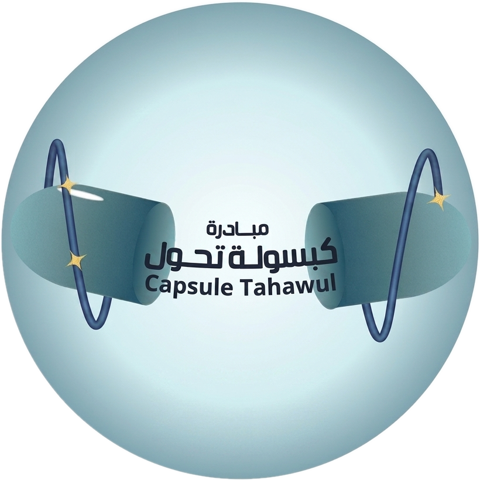

عربي
EN
الخطوة 2
خطة الورشة
نمط الدورات (شرح ← لاب ← بريك)
مناسب للورش العملية. اتركه مطفأ لخطة حرة التنظيم.
دقائق الشرح
دقائق اللاب
دقائق البريك
ولّد الخطة
→
جاري بناء الخطة...
الأهداف التعليمية
مخطط الورشة
↻ أعد التوليد
تعديل خطة الورشة بالذكاء الاصطناعي
تطبيق التعديل
⬅ رجوع
متابعة للمحتوى
→